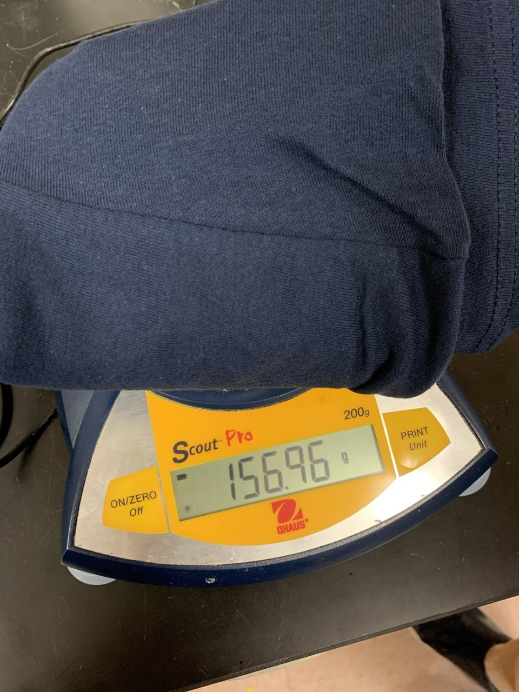
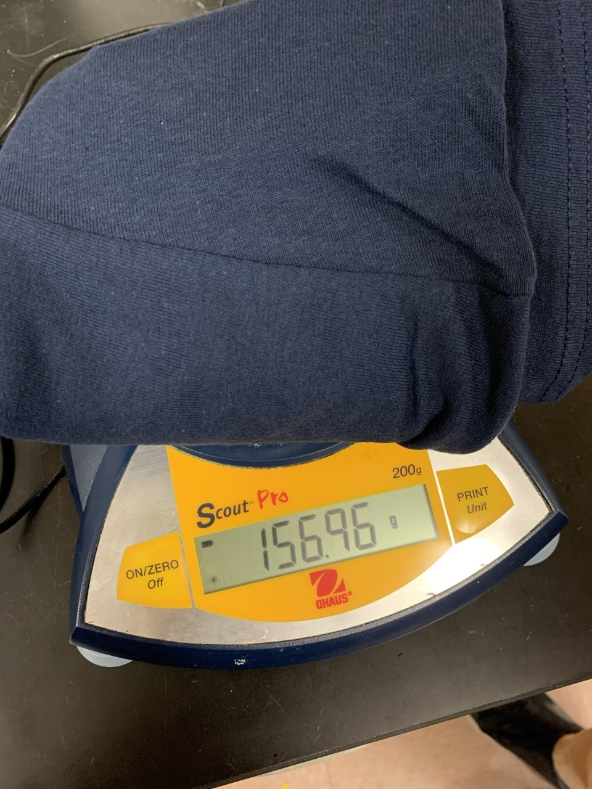

If we had a mole of t-shirts, that certainly would be a lot of shirts. But, what would the scale of \(6.02 \times 10^{23}\) shirts really be?
We took a stack of 32 medium sized t-shirts and stacked them up. As seen in Figure 1, this stack measured 4 cm tall. We can thus say that \[\frac{4 \text{ cm}}{32 \text{ t-shirts}} = \frac{1}{8} \text{ cm per t-shirt.}\]
What would happen if we gave every person on Earth 10 shirts? According to the U.S. Census, that would be roughly 7.625 billion people[a]. Doing the math, we see that we’d quickly find ourselves running out, not of shirts, but of people.
We would run out of people on Earth after 76.25 billion shirts, but even then, we’d only be \(\frac{76.25 \text{ billion}}{6.02 \times 10^{23}}\) or \(.000000000013\%\) done with our mission. If we actually wanted to distribute our entire mole of shirts, we would need to get more people. \[ 1 \text{ mol shirts} \times \frac{6.02 \times 10^{23} \text{ shirts}}{1 \text{ mol shirts}} \times \frac{1 \text{ person}}{10 \text{ shirts}} \times \frac{1 \text{ Earth}}{7.625 \times 10^9 \text{ people}}\] \[ \approx 7.90 \times 10^{12} \text{ Earths}\]
This is not just one or two extra Earths of people, but rather almost 8 trillion more planets. For reference, only about 1.3 million Earths can fit into the Sun[b].
If each person on each of the trillions of Earths wanted to stack their 10 shirts in a pile, how tall would the surrounding wardobe need to be? \[ 1 \text{ mol shirts} \times \frac{6.02 \times 10^{23} \text{ shirts}}{1 \text{ mol shirts}} \times \frac{1 \text{ cm}}{8 \text{ shirts}} \times \frac{1 \text{ km}}{1 \times 10^5 \text{ cm}}\] \[ \approx 7.53 \times 10^{17} \text{ kilometers}\]
Pluto, one of the most distant bodies in our solar system, orbits the Sun at \({5.91 \times 10^9}\) km[c]. This is a distance 39.5 times greater than that between the Earth and the Sun. Pluto is so far out that it takes roughly 5.47 light hours for light from the Sun to reach it. \[\frac{7.53 \times 10^{17} \text{ km shirts}}{5.91 \times 10^9 \text{ km to Pluto}} \approx 127 \times 10^8 \text{ (one way) trips}\]
We would need more than 100 million trips from the Sun to Pluto to stack this mole of shirts. Unfortunately, IKEA does not currently offer a wardrobe this big.
The shirts we measured were made of \(100\%\) cotton. Cotton is a mix of several molecules, but it is primarily composed of cellulose[d].
The chemical formula for cellulose is \(\text{C}_{6}\text{H}_{10}\text{O}_{5}\). Listed below are the molar masses of the components of cellulose. \[\begin{aligned} \text{Carbon: } & 12.01 \text{ g/mol} \times 6 = 72.06 \text{ g/mol} \\ \text{Hydrogen: } & 1.01 \text{ g/mol} \times 10 = 10.10 \text{ g/mol} \\ \text{Oxygen: } & 16.00 \text{ g/mol} \times 5 = 80.00 \text{ g/mol}\end{aligned}\]
Thus, cellulose has a molar mass of \(72.06 + 10.10 + 80.00 = 162.16 \text{ g/mol}\).

 

We took three shirts and weighed them. Based on the data shown in Figure 2, the average mass of one shirt is \[\frac{170.36 \text{g} + 169.68 \text{g} + 156.96 \text{g}}{3} \approx 165.67 \text{g.}\]
We now know enough to say how many shirts one mole of cellulose would make. \[1 \text{ mol cellulose} \times \frac{162.16 \text{ g cellulose}}{1 \text{ mol cellulose}} = 162.16 \text{ g cellulose}\]
One mole of cellulose is 162.16 grams, which is less than the average weight of our shirts, 165.67 grams. This means we would only be able to make \(\frac{162.16}{165.67}\) of a shirt, or \(97.881\%\) of a shirt with a mole of cellulose molecules.
One person counted popcorn kernels in 30 second intervals, for 3 rounds. These results can be seen in Table 1. We counted 32 kernels in the first round. Thus, continuing at the same rate would let us count a mole of popcorn kernels in \({1.79 \times 10^{16}}\) years, as seen below: \[ 1 \text{ mol kernels} \times \frac{6.02 \times 10^{23} \text{ kernels}}{1 \text{ mol kernels}} \times \frac{30 \text{ seconds}}{32 \text{ kernels}} \times \frac{1 \text{ day}}{86400 \text{ seconds}} \times \frac{1 \text{ year}}{365 \text{ days}}\] \[ \approx 1.79 \times 10^{16} \text{ years}\]
We can perform the same calculation on the result of the two other trials, which gives us the following data:
| Trial | # Counted | Time (Years) |
|---|---|---|
| Trial 1 | \(32\) | \(1.79 \times 10^{16}\) |
| Trial 2 | \(33\) | \(1.74 \times 10^{16}\) |
| Trial 3 | \(29\) | \(1.97 \times 10^{16}\) |
| Average | \(31 \frac{1}{3}\) | \(1.83 \times 10^{16}\) |
We measured three batches of one dozen popcorn kernels. These results can be seen in Table 2. The first dozen weighed 2.02 grams. Based on this, we can calculate the mass of a mole of kernels. \[\frac{2.02 \text{ g}}{12 \text{ kernels}} \times \frac{6.02 \times 10^{23} \text{ kernels}}{1 \text{ mol kernels}} \approx 1.01 \times 10^{23} \text{ grams per mol}\]
We can repeat this calculation for the other trials, just like we did for counting a mole of kernels:
| Trial | Weight (g) | Molar Mass (g/mol) |
|---|---|---|
| Trial 1 | \(2.02\) | \(1.01 \times 10^{23}\) |
| Trial 2 | \(2.13\) | \(1.06 \times 10^{23}\) |
| Trial 3 | \(1.84\) | \(9.23 \times 10^{22}\) |
| Average | \(2.00\) | \(1.00 \times 10^{23}\) |
https://www.census.gov/popclock/, retrieved January 18, 2020 ↩︎
http://coolcosmos.ipac.caltech.edu/ask/5-How-large-is-the-Sun-compared-to-Earth- ↩︎
https://nssdc.gsfc.nasa.gov/planetary/factsheet/plutofact.html ↩︎
https://www.cottoninc.com/quality-products/nonwovens/cotton-fiber-tech-guide/cotton-morphology-and-chemistry/ ↩︎